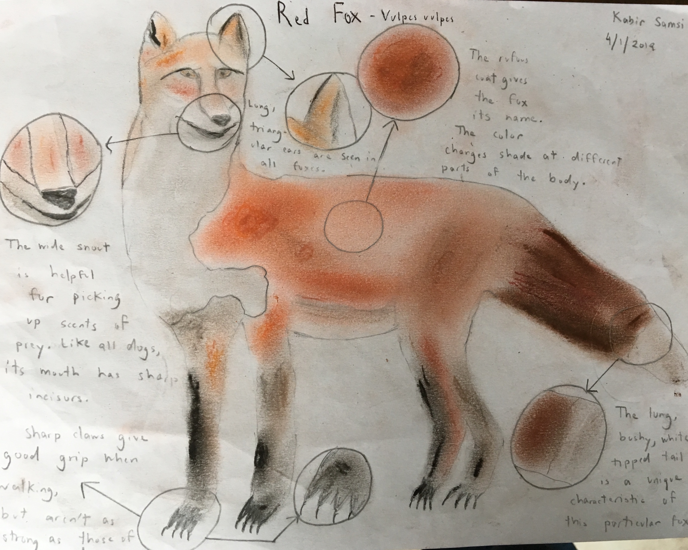
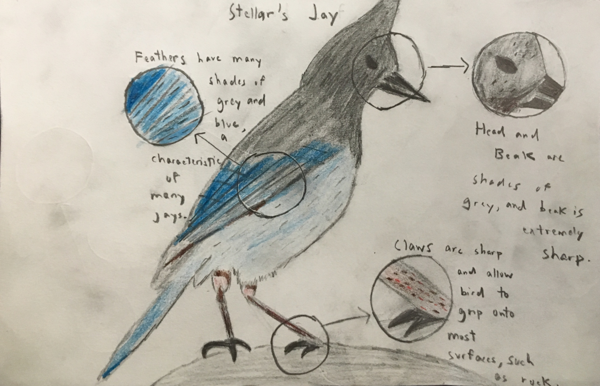

Fauna Sketches
 
Mediums: Chalk Pastel, Color Pencils, Printer/Sketchbook Paper
We were supposed to draw four scientific sketches over the course of the biome trip. The first two were supposed to be done before the trip, featuring one fauna and one flora. The second pair were to be done on the trip, and could be anything we wanted, as long as it had the qualities of a scientific sketch. I did another fauna sketch on this trip, which is the Steller's Jay. I really enjoyed doing these sketches, as it was a fun way to combine the precision of science with the creativity of art.